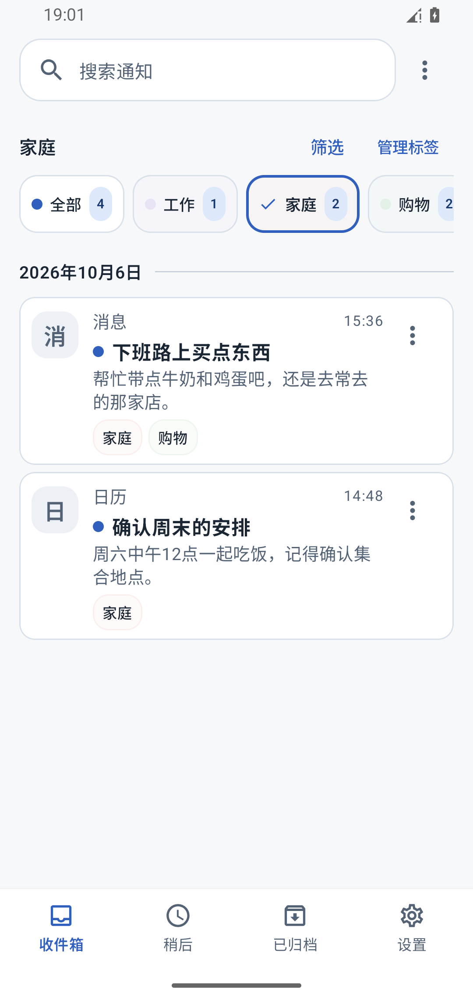
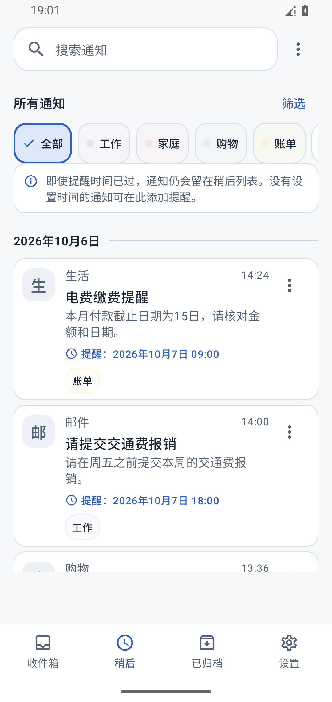
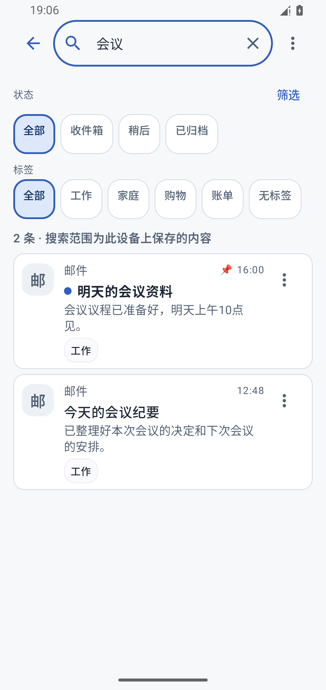
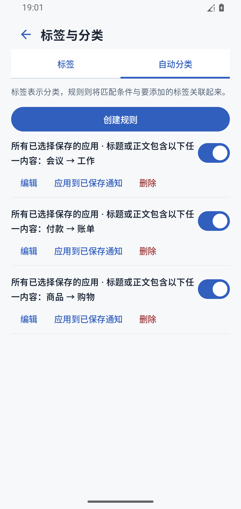

下班路上，
只看家人的消息。
选择“家庭”标签，
确认家人托你买的东西。

- 收到通知
- 筛选家庭
- 查看事项
工作消息、购物安排，都能整理。
保存所选应用的通知，用标签分类，稍后再查看。
全部功能免费 · 支持 Android 12 及以上
保存所选应用的通知
通过标签，筛选需要的通知
稍后查看，也能随时搜索
收到的通知，方便时再查看、再处理。
选择“家庭”标签，
确认家人托你买的东西。

把缴费通知加入“稍后”，
设置提醒，方便时再查看。

界面中的通知均为示例。提醒功能需启用，提醒可能因省电设置等原因延迟。
输入“会议”等关键词搜索。
从标题、正文和备注中，查找已保存的通知。
也可以按应用、日期或标签筛选。

根据应用或关键词，自动为新通知添加标签。

把下一步要做的事写在通知上。
整理收件箱，之后仍可搜索。
保存、搜索、分类，都在设备内完成。
通知内容、备注和标签不会发送至或保存在运营方的服务器上。
保存哪些应用的通知、保存多久，由你决定。
仅保存启用保存功能后可获取的通知。此前已删除的通知无法恢复。
开始保存后成功获取并保存的通知，即使从 Android 通知栏清除，仍可查看。保存前已删除的通知无法恢复。受操作系统保护的通知等内容，可能无法获取正文。
通知内容、备注和标签在设备内管理，不会发送至或保存在运营方的服务器上。手动导出历史记录时，文件会保存在你选择的位置。你也可以启用查看锁定，通过生物识别或设备屏幕锁定保护查看权限。查看锁定不会对保存的数据进行加密。
设置需要查看的日期和时间并启用提醒后，应用会在指定时间到达后发送提醒，方便你回来查看。此功能需要允许应用显示通知。提醒可能因省电设置等原因延迟。
在通知收件箱中标记已读或整理通知，不会改变原应用的已读状态。
全部功能均可免费使用。支持 Android 12 及以上版本。
全部功能免费 · 支持 Android 12 及以上